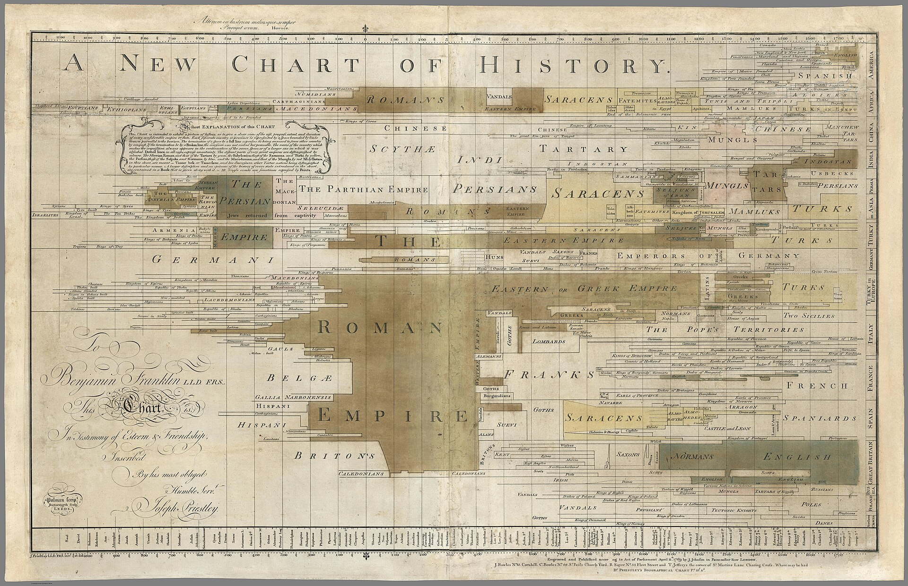

Due metà, due statuti
Nel 1765 Joseph Priestley disegnò le vite degli uomini come linee su una scala del tempo. Qui le linee sono le cose che passavano per eterne.
48
voci, dalla mente bicamerale all'ecovandalo
192
passi citati alla lettera, a prova delle nascite
2026
l'anno del primo gesto, per quasi ogni fine
72 ore
il tempo di un incarico, per chi lo accetta
Nascita documentata
La prima metà di ogni voce dice quando, dove e nell'interesse di chi la cosa è cominciata. Viene da un libro del catalogo di Edizioni Tlon, e accanto stanno i passi che la sostengono, copiati alla lettera e ricontrollati sul testo.
Fine immaginata
La seconda metà è finzione dichiarata. Racconta al passato come la cosa è finita, risale al primo gesto da cui tutto sarebbe cominciato e dice che cosa è costato. Nessuna persona reale vi compie azioni inventate.

Le voci, a scaffale
In ordine di nascita. Ogni dorso è una cosa finita e porta il libro da cui viene.
Il futuro manda incarichi
Ogni fine risale a un primo gesto del 2026 o del 2027, compiuto da poche persone senza incarichi pubblici. Quel gesto torna a chi legge sotto forma di compito. Si fa fuori casa, in settantadue ore, e chiede di osservare senza intromettersi.
Lo scontrino qui accanto tiene il conto sul tuo dispositivo e non manda niente a nessuno.
Nessun incarico accettato
Apri una voce e accetta il suo incarico. Comparirà qui, con il tempo che resta.
Dal 2036, a chi legge prima
Questa enciclopedia è stata chiusa nel 2036 e raccoglie cose finite. Di ciascuna i libri avevano già stabilito la nascita, con una precisione che allora pochi vollero notare.
Vi abbiamo aggiunto la fine. Per ogni fine abbiamo cercato all'indietro il primo gesto da cui tutto sarebbe cominciato, e lo abbiamo trovato quasi sempre fra il 2026 e il 2027, opera di poche persone che non si conoscevano.
Dei luoghi restano descrizioni discordanti. Alcuni verbali sono incompleti, e crediamo che lo siano di proposito, perché qualcun altro debba ricominciare.
Una sola voce non ha una fine. È l'ultima, e conviene leggerla per prima.
La redazione dell'Archivio
14 novembre 2036